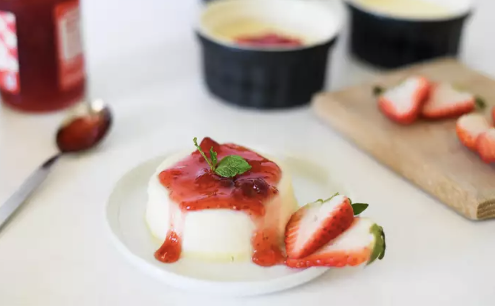
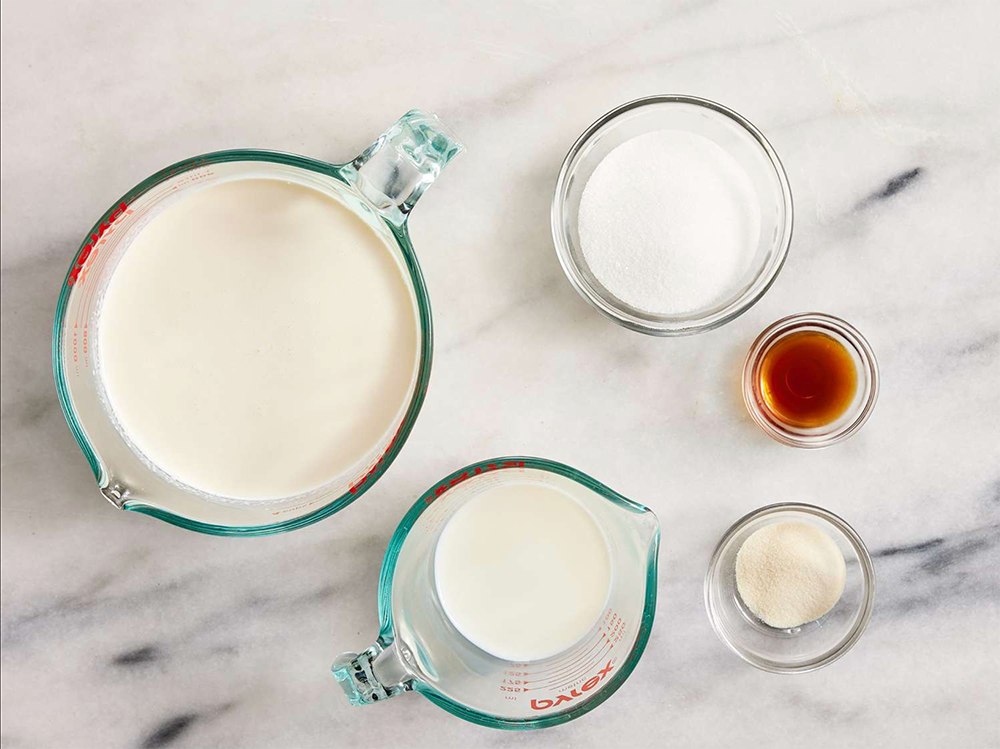
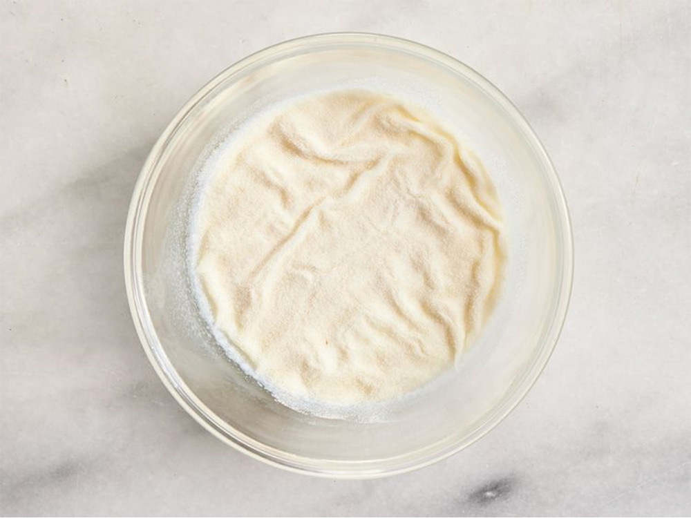
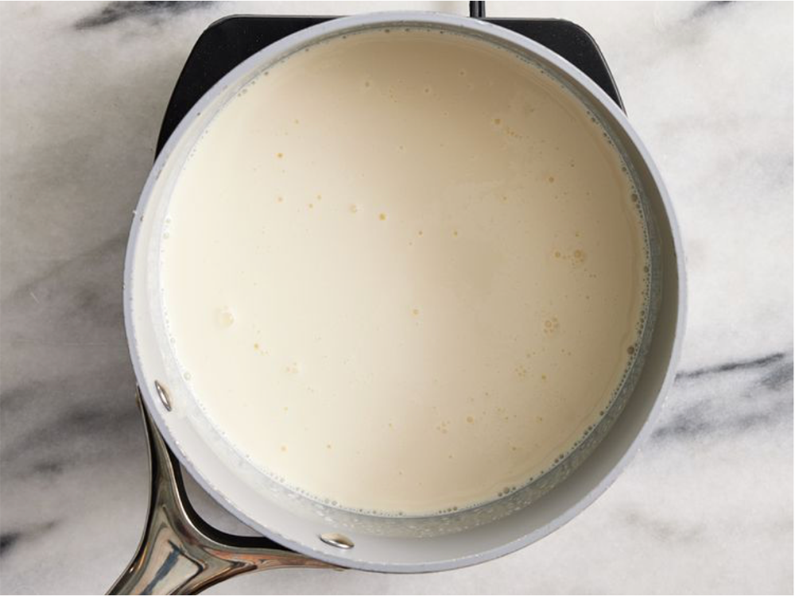
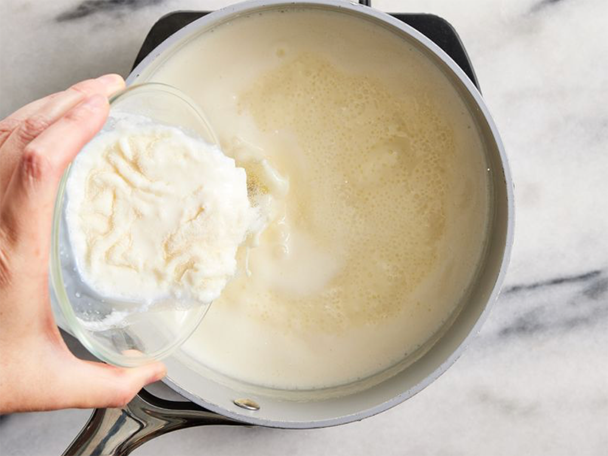
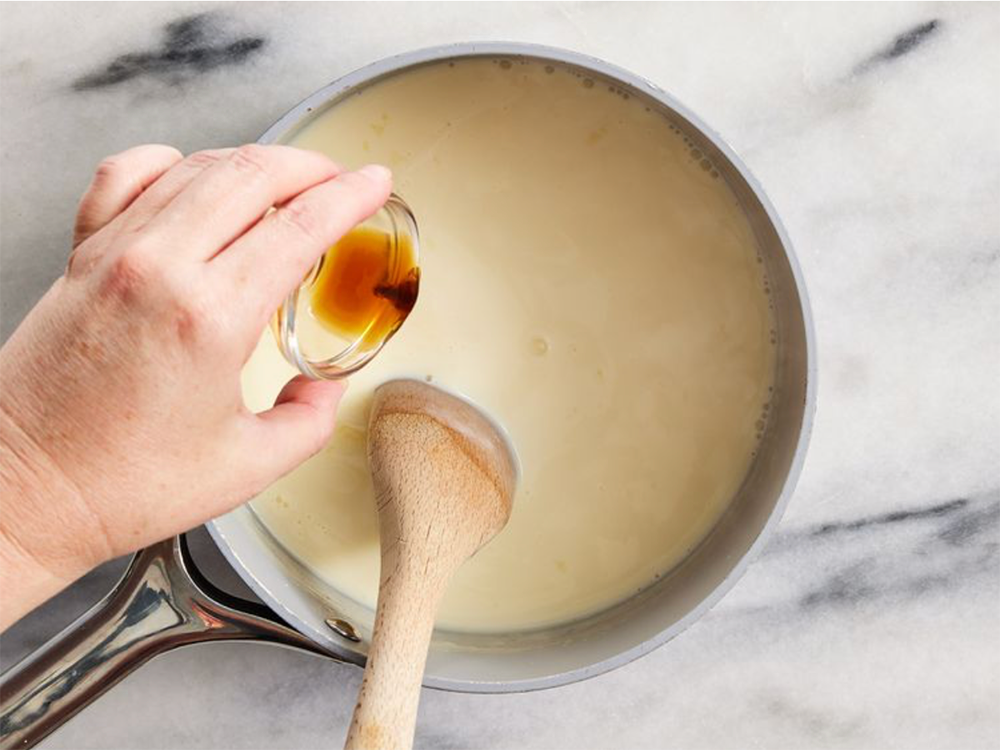
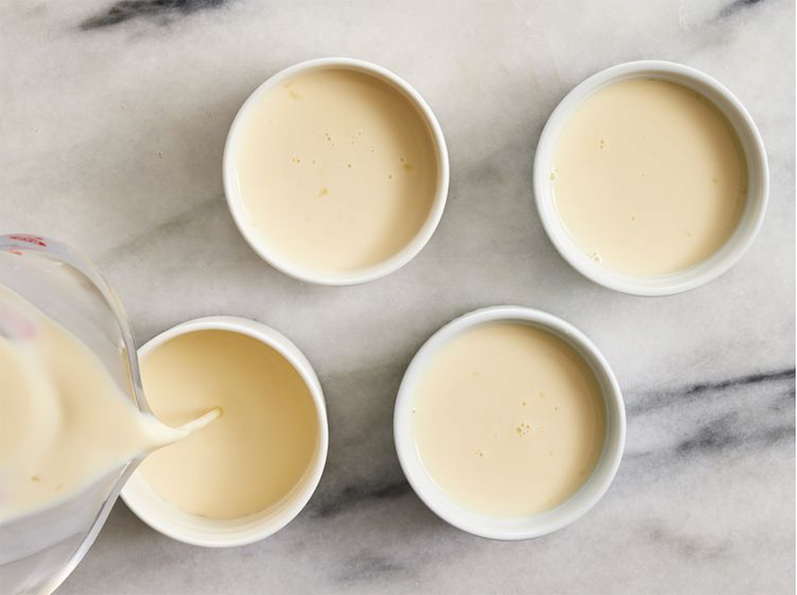

Panna cotta is a traditional, sweet, and delicious Italian custard. It’s my favorite dessert, and it feels light and refreshing—a perfect summer dessert to pair with fresh summer fruit.

PREP 5 m
COOK 10 m
REFRIDGE. 4 h 20 m
Directions
step 1/7
Gather all ingredients

step 2/7
Pour milk into a small bowl. Sprinkle gelatin powder over milk and stir until combined. Set aside.

step 3/7
Stir heavy cream and sugar together in a saucepan. Set over medium heat and bring to a boil; watch carefully as the cream can quickly bubble up and boil over.

step 4/7
Immediately stir gelatin mixture into boiling cream, stirring until completely dissolved. Cook and stir for 1 minute.

step 5/7
Remove the pan from the heat and stir in vanilla.

step 6/7
Pour cream mixture into 6 individual ramekins. Leave to cool, uncovered, until no longer warm, about 20 minutes.

step 7/7
When cool, cover with plastic wrap. Refrigerate until set, at least 4 hours but preferably overnight.